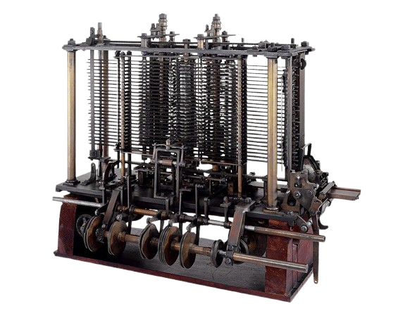
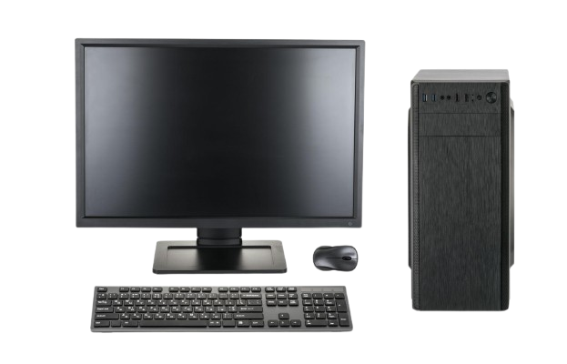
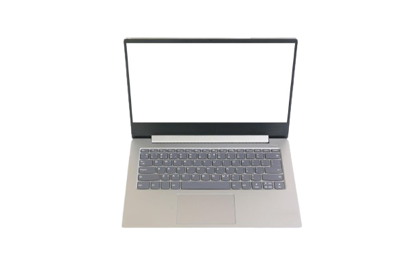
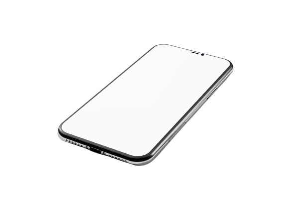

Evolusi Komputer
Dari komputer pertama hingga komputasi modern
Computer Display(Better Experience) = Scroll ke bawah untuk melihat perubahan komputer dari masa ke masa.
Mobile Display = Klik tombol geser untuk melihat perubahan komputer dari masa ke masa.

Pascaline
Salah satu mesin hitung mekanik paling awal. Menjadi awal dari gagasan bahwa mesin dapat membantu proses perhitungan.

Analytical Engine
Konsep mesin komputasi serbaguna dari Charles Babbage, dengan ide input, proses, dan penyimpanan data.

ENIAC
Komputer elektronik awal berukuran sangat besar, memenuhi satu ruangan, dan membutuhkan daya yang sangat tinggi.

Era Transistor
Transistor menggantikan tabung vakum. Komputer menjadi lebih kecil, lebih stabil, dan lebih efisien.

Mikroprosesor
CPU dimasukkan ke dalam satu chip kecil. Ini menjadi langkah besar menuju komputer personal.

Komputer Personal
Komputer mulai hadir di rumah dan kantor. Penggunaan komputer menjadi lebih dekat dengan kehidupan sehari-hari.

Laptop & Internet
Komputer menjadi lebih portabel dan mulai terhubung secara global lewat internet.

Smartphone
Daya komputasi berpindah ke perangkat genggam. Komputer kini selalu ikut bersama penggunanya.

Komputasi Modern
Komputer modern hadir dalam berbagai bentuk: desktop, laptop, smartphone, cloud server, hingga perangkat AI.
Dari mesin mekanik besar hingga perangkat kecil super cepat, arah evolusi komputer selalu menuju bentuk yang lebih ringkas, cepat, dan dekat dengan manusia.